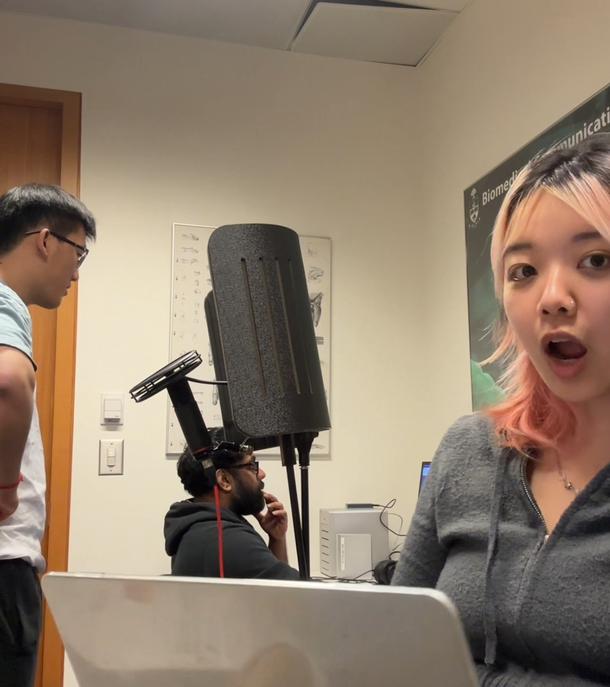

march 19, 2026
dear devdiaries,
The final crunch week!!!!!!! This week was CRAZY.
We spent this week putting everything together and combining assets into the usable game. We had to tie up a few more loose ends, such as doing voice recording for Bolus and Enoki. I ended up voice acting for the role of Bolus and making some sound effects for the background.

I also was in charge of making the intro/tutorial video that plays at the beginning of the demo to explain the stomach level and the different stages. Initially, it was meant to be a slideshow/animatic level intro to save time. However, I wanted to make an intro that was a bit more immersive. To do this and also stay efficient, I combined the existing assets to create the animation in after effects. I mashed together the 2D character illustrations (by Qingyue) and the 3D modelled environment with some camera zooms and simple movement animations. I also integrated some sound effects and the voice recordings to create an intro animation that felt more finalized.
 The dev team is now working to fix any bugs so that we're able to publish something for people to demo!
The dev team is now working to fix any bugs so that we're able to publish something for people to demo!